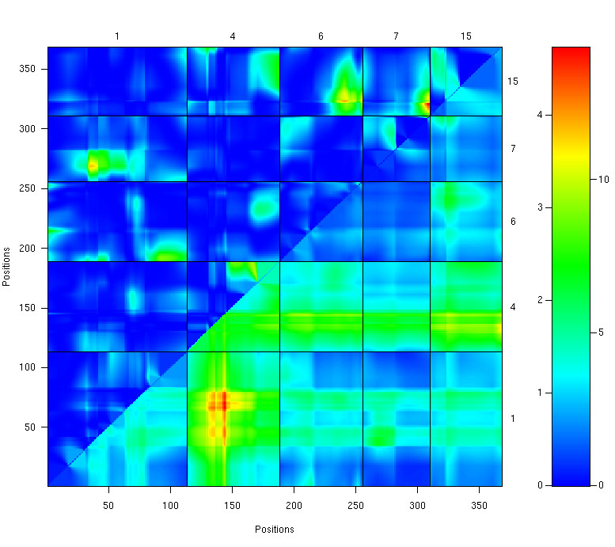

[ Home | Download | FAQ | News | Bugs | Sample data | Tutorials | Book | Manual | Citation ]
LOD scores for a two-dimensional genome scan with a two-QTL model, for a selected set of chromosomes. Values in the lower right triangle are for joint two-locus LOD scores; values in the upper left triangle are LOD scores for the test of epistasis. The color scale at the right indicates separate scales for the joint LOD scores (right) and the epistasis LOD scores (left).

[ Home | Download | FAQ | News | Bugs | Sample data | Tutorials | Book | Manual | Citation ]